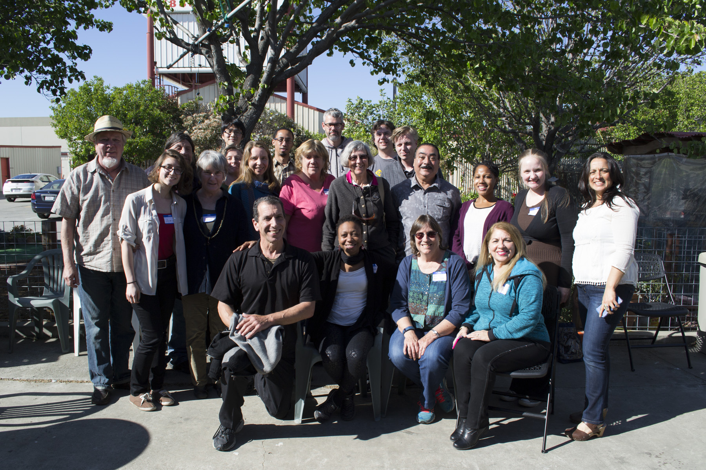

Air Watch is an interactive tool for the fenceline communities of the San Francisco Bay Area to explore our air quality data.
Get Started
To view air pollution in your community, select the corresponding tab at the top of the page.
To report pollution odors to Air Watch: Bay Area, download our mobile app for iOS or Android. You can also file a complaint with the Bay Area Air Quality Management District here.
To print or download a daily air quality summary, click the "Print Daily Summary" tab above. To subscribe to daily summaries when air quality was worse than average, click here.
Capture Incidents

All the chemicals monitored on our site are linked with an array of adverse health effects— and are known byproducts of refinery processes. Spikes in the readings of these chemicals, paired with wind blowing from the direction of the refinery, indicate a potentially hazardous pollution event.
FAQ
Where does the data come from?
Most of the data on our site comes from fenceline.org . Unlike fenceline.org, however, our site displays archived data as far back as May 2015. The rest comes from BAAQMD monitors or inexpensive monitors set up by community members.
Who decides what level of a given chemical constitutes a health hazard?
Health limits vary widely between governmental agencies. Our site uses figures from the US National Ambient Air Quality Standards (NAAQS), the Agency for Toxic Substances and Diseases Registry (ATSDR), and the California Office of Environmental Health Hazard Assessment (OEHHA). In the interest of public health, we chose the lowest figures that were deemed hazardous for each chemical.
An air pollution event occurred in my community, but the monitors didn't pick up anything. What happened?
Events that occur outside the range of the sensors may not appear on the site. What the monitors pick up depends highly on the location of the pollution source, and the wind speed and direction at the time of the event.
Why are schools included on the map?
Air pollution carries higher risks for vulnerable populations—which includes children and the elderly. Because our aim is to contextualize air pollution data in how it impacts real people, we wanted residents to be able to see whether an air pollution event might impact their children.
What's New
About Us
Air Watch is developed and maintained by the Fair Tech Collective at Drexel University in collaboration with the Community Robotics, Education, and Technology Empowerment Lab at Carnegie Mellon University and concerned community members from:
- Benicia Good Neighbor Steering Committee
- C.R.U.D.E. (Crockett-Rodeo United to Defend the Environment)
- LACEEN
- Community Science Institute